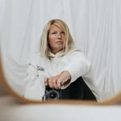

01 / 04
Newborn focení
Miminka fotím do 20 dnů od narození, i ta předčasně narozená. Uspávání a polohování je moje práce, vy se staráte jen o přísun mlíčka.
Zeptat se na volný termín →


Miminka, bříška a celé rodiny
Zeptat se na termín →( Ahoj )
Jmenuji se Soňa Javorská a ve svém ateliéru v Chodově fotím novorozená miminka , budoucí maminky i celé rodiny . Za rodinami ráda vyrážím i ven, nejčastěji v okolí Karlových Varů a Sokolova.
Každé focení je jiné. Tohle jsou věci, které dělám nejradši.
01 / 04
Miminka fotím do 20 dnů od narození, i ta předčasně narozená. Uspávání a polohování je moje práce, vy se staráte jen o přísun mlíčka.
Zeptat se na volný termín →02 / 04
Focení bříška v ateliéru nebo venku. Půjčení oblečení je v ceně, takže nemusíte nic shánět.
Zeptat se na volný termín →03 / 04
Venku fotím na místě, které vyberu já, nejčastěji odpoledne od 16 hodin, kdy je nejhezčí světlo. Vejdeme se do hodiny a půl, aby to děti bavilo až do konce.
Zeptat se na volný termín →Kliknutím fotku zvětšíte.
@sona.javorska ↗
Od první zprávy po hotovou galerii. Bez složitostí a bez stresu.
806lidí sleduje mou práci na Instagramu
650příspěvků s fotkami a příběhy
Napište mi do zpráv na Instagramu nebo zavolejte na 775 948 057. Domluvíme se, jaké focení chcete a kdy.
Miminko je ideální nafotit do 20 dnů od narození. Venku fotíme odpoledne, většinou od 16 hodin, v ateliéru podle domluvy.
Newborn focení trvá 3 až 4 hodiny a zbytek nechte na mně. Rodinné focení v ateliéru zabere zhruba hodinu, venku nejvýš hodinu a půl.
Z náhledů si vyberete fotky a já je pro vás upravím. Upravené fotky dostanete v digitální podobě, neupravené ani RAW soubory neposkytuji.

Nechte obavy doma a přijeďte si odpočinout.

Za objektivem
Fotím pod značkou Maple's photo a nejvíc času trávím s těmi nejmenšími. Focení miminek je ze všech nejnáročnější a zároveň mě nejvíc baví. Od doby, co je fotím, vím, že miminko pozná, když je maminka nervózní. Proto vás prosím: nechte obavy doma a přijeďte si ke mně odpočinout.
U rodinného focení hlídám hlavně to, aby děti nebyly unavené. V ateliéru nám stačí zhruba hodina, venku se vejdeme do hodiny a půl. Delší focení už nic nepřináší, děti přestanou bavit naše blbůstky a začnou mít hlad. Venku proto fotím až odpoledne, kdy je měkčí světlo a děti mají ještě energii.
Ateliér mám v Chodově a je otevřený od ledna do října. Listopad a prosinec patří vánočnímu focení, kdy scény zaberou velkou část prostoru. Na focení novorozenců mám připravené oblečení pro miminko a půjčit si můžete i oblečení pro dospělé.

Soňa
Soňa Javorská · Fotografka miminek, těhotenství a rodin
Miminka fotím do 20 dnů od narození, i ta předčasně narozená. Starší miminka už tolik nespí a hůř se polohují, a proto potom doporučuji až focení v půl roce.
Počítejte se 3 až 4 hodinami. Miminko potřebuje čas na jídlo, uspání i přebalení a já ho nechci nikam hnát. Sourozence je nejlepší vzít na začátek nebo na konec focení.
Prosím, ozvěte se mi a focení přesuneme. S nemocným dítětem nebývá focení úspěšné a nikdo z nás by z výsledku neměl radost.
Newborn focení s 10 upravenými fotkami stojí 3 400 Kč, rodinné focení v ateliéru nebo venku s 12 fotkami 2 400 Kč a kombinace ateliér + exteriér 3 000 Kč. Minifocení s 5 fotkami vyjde na 2 000 Kč. Každá fotka navíc je za 150 Kč a expresní zpracování do 7 dní stojí 500 Kč.
Kontakt
Napište pár vět o tom, co si představujete, a termín, který se vám hodí.
mapleri@seznam.cz